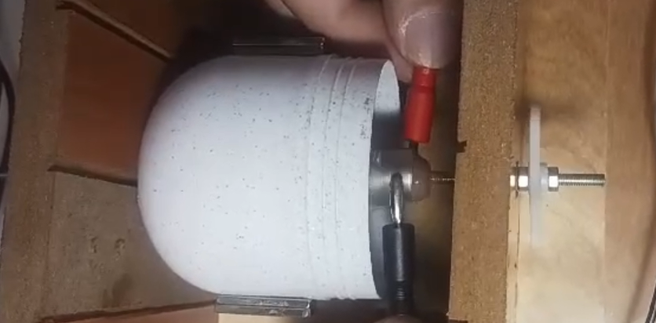

Eletrotecnia e Instalações Elétricas
Construção de um motor elétrico de corrente contínua a partir de materiais simples e reciclados.
Unidade curricular
Eletrotecnia e Instalações Elétricas
Ano
2023/2024
Equipa
5 elementos
Princípio
Eletromagnetismo
Estrutura
Carcaça · Estator · Rotor

Motor DC finalizado.
Construção de um motor elétrico de corrente contínua a partir de materiais simples e reciclados, de modo a ilustrar, na prática, os princípios de eletromagnetismo utilizados para o funcionamento dos motores elétricos.
Um motor elétrico transforma energia elétrica em energia mecânica, normalmente através da reação entre dois campos magnéticos: polos opostos atraem-se, polos iguais repelem-se.
Num motor DC, a carcaça dá suporte estrutural, o estator permanece fixo e gera o campo magnético que induz corrente no rotor, e o rotor gira em torno do seu eixo, produzindo o movimento de rotação.
Demonstração do funcionamento do motor.
Nos vídeos seguintes é explicado tanto o processo da construção do motor assim como a teoria do seu funcionamento.
Parte 1
Parte 2
Parte 3